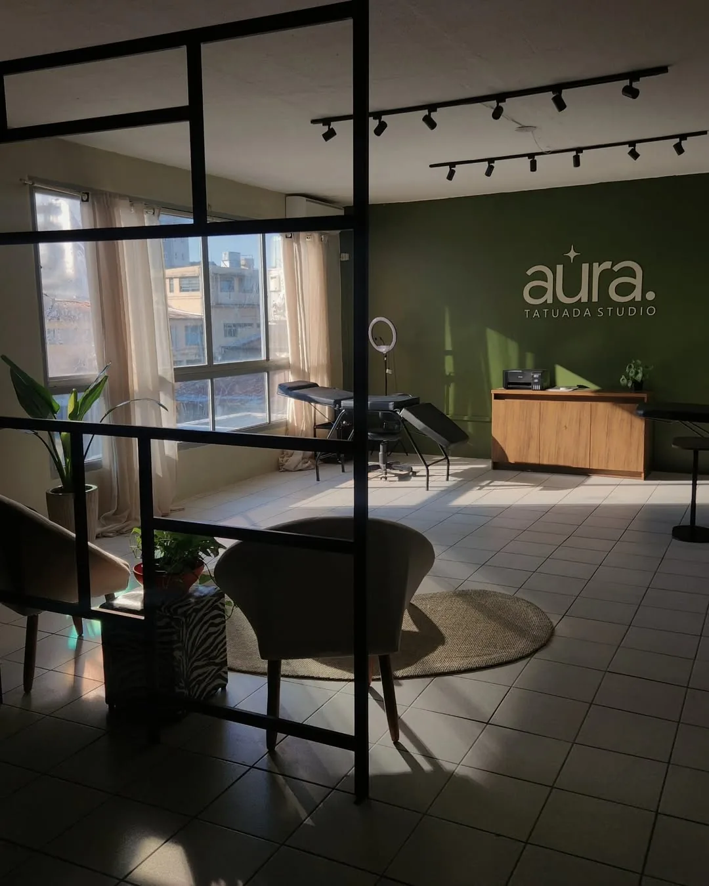
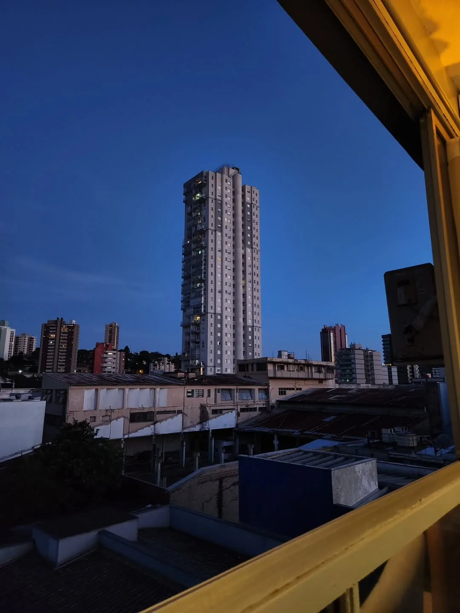
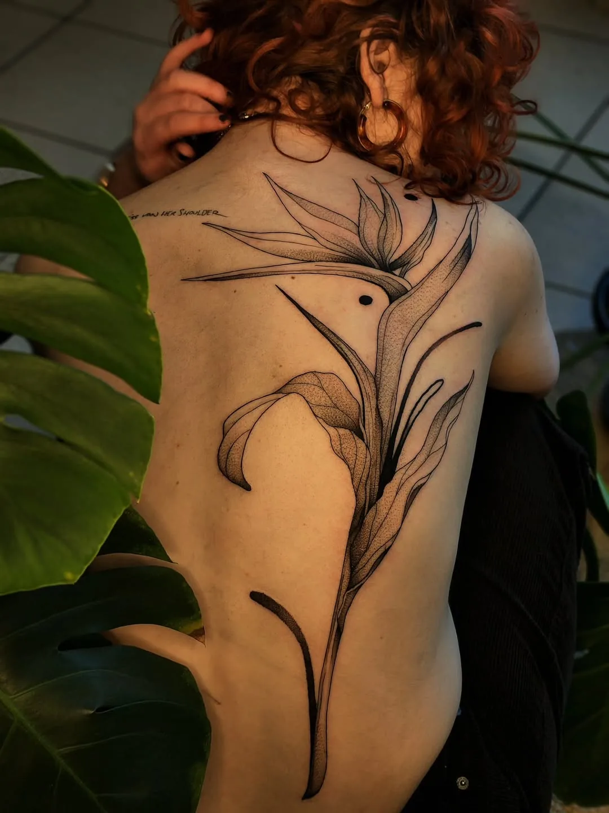
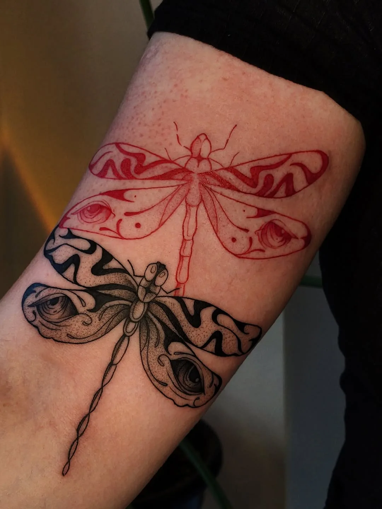
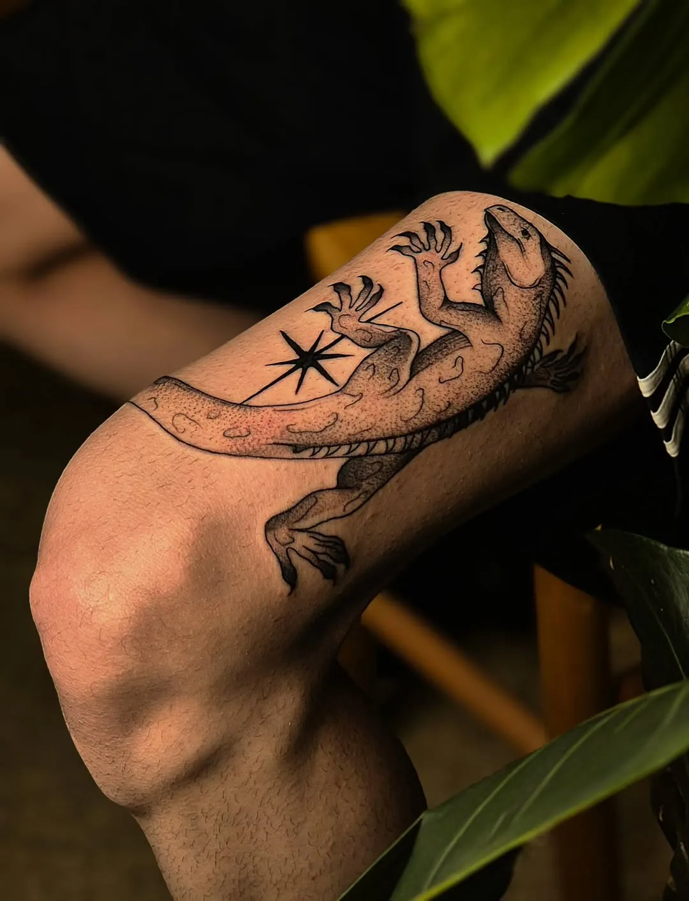
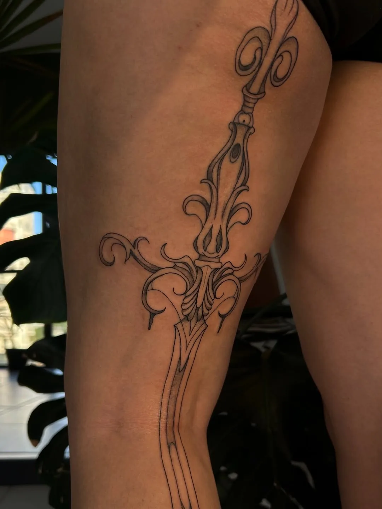
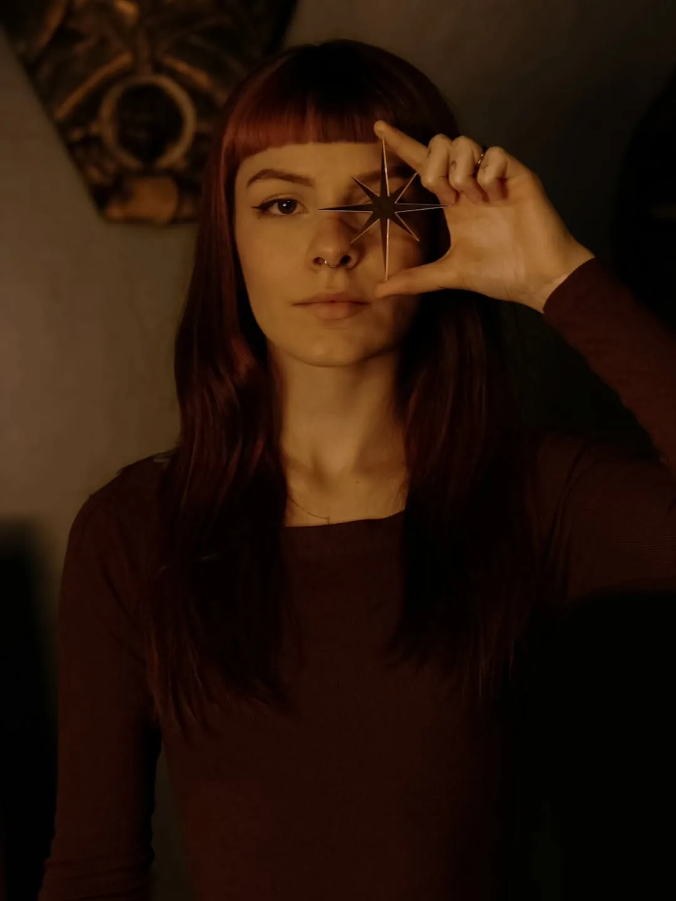
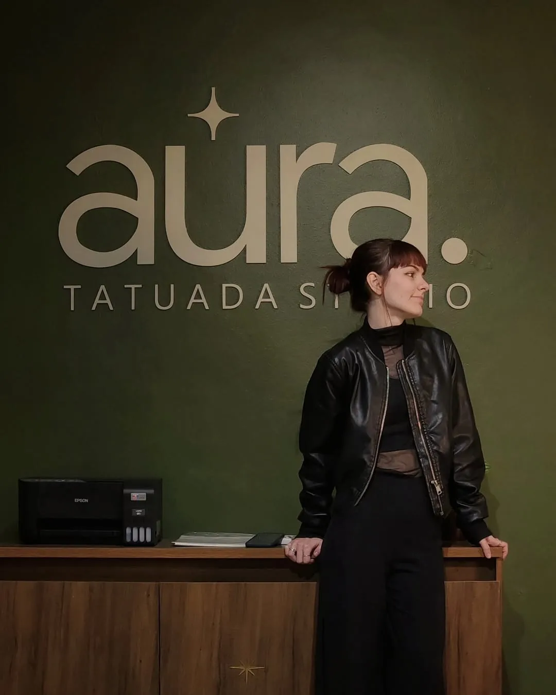

Arte que floresce
na pele.
Blackwork, botânica e desenhos autorais para levar um pouco de arte com você.



A janela vai receber os movimentos e transições do portfólio na próxima etapa.
TRAÇO, TEXTURA E NATUREZA
Desenhos com
personalidade.
Linhas orgânicas, composições inspiradas na natureza e o contraste da tinta preta. Uma seleção de trabalhos para conhecer a linguagem da artista.


POR TRÁS DOS TRAÇOS
Prazer,
sou a Camila.
O trabalho de Camila reúne tatuagem autoral, referências botânicas e atenção às formas e aos detalhes.
Texto de apresentação provisório. A trajetória e o processo criativo serão validados com a artista.
Vamos conversar
UM ESPAÇO PARA CRIAR
Um lugar com
alma própria.
Verde-oliva, plantas, luz natural e detalhes acolhedores. Conheça um pouco do ambiente do Aura Tatuada Studio, em Novo Hamburgo.

MAPA EM PREPARAÇÃO
Vamos criar algo seu?
Envie sua ideia, referências e a região do corpo em que gostaria de tatuar. A Camila poderá orientar os próximos passos.
Conversar pelo InstagramWhatsApp e formulário de orçamento serão integrados após confirmação dos contatos.